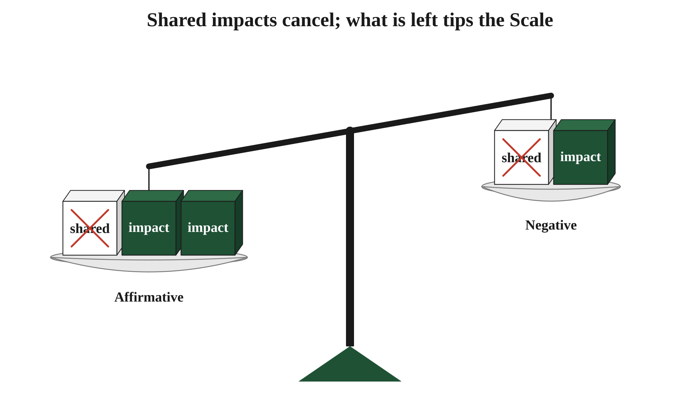

Chapter 4: Intro to Refutation (Arguments of Fact and Value)
In this chapter
- Objectives
- Key terms
- The idea
- 4.1 Clash is what makes it a debate
- 4.2 Four-step refutation
- 4.3 Choosing an answer: significance, relevance and accuracy
- 4.4 Finding the weak premise: syllogisms
- 4.5 Flowing
- 4.6 How the judge decides: the Scale
- Say it
- Worked examples
- An individual decision
- A state policy
- How a judge weighs it
- Common mistakes
- Practice
- Check questions
Move: Answer and Weigh. Builds on: Chapter 2. Where you use it: every speech after the first one, and every decision a judge makes.
Objectives
By the end of this chapter you should be able to:
- Answer an argument using the four-step frame.
- Choose an answer using the three questions of significance, relevance and accuracy.
- Lay out an argument as a syllogism and find its weakest premise.
- Flow a short speech, with each argument in its own row and each speech in its own column.
- Explain how a judge decides a debate by placing impacts on the Scale.
Key terms
Refutation, clash, four-step refutation, significance, relevance, accuracy, syllogism, major premise, minor premise, conclusion, flow, signposting, dropped argument, extension, the Scale, offense, defense.
The idea
4.1 Clash is what makes it a debate
Two speeches that never respond to each other are not a debate; they are two speeches. Debate happens when the sides engage the same points, which debaters call clash. The skill that creates clash is refutation: responding to your opponent's arguments.
New debaters often find refutation harder than building their own case, because their own case can be written in advance and refutation has to happen in the moment. This chapter gives you a frame for delivering any answer, a way to choose which answer to give, a way to keep track of the debate as it happens, and a picture of how the judge puts it all together at the end.
4.2 Four-step refutation
Every answer you give should have four parts. They tell the judge which argument you are answering, what your answer is, why they should believe it, and what it means for the debate.
- Signal: "They say..." Name the argument you are answering, briefly, so the judge knows where to write your answer.
- State: "We say..." Give your counter-claim.
- Support: "Based on..." Give the evidence or reasoning behind your counter-claim.
- Summarize: "That means..." Explain how your answer resolves the clash in your favor.
Here is the frame in use on nuclear energy:
"They say nuclear energy is unsafe. We say that even if it is not perfectly safe, it is the safest form of large-scale energy we have. Based on research summarized by Our World in Data, coal causes about 25 deaths for every terawatt-hour of electricity it produces and gas about 3, while nuclear power causes a small fraction of one. That means safety is a reason to prefer nuclear energy to the sources it would replace, not a reason to reject it."
The summary step is the one beginners skip, and it is the one that wins debates. Without it, the judge has two competing claims and no instruction on which to prefer. With it, you have told the judge how to resolve the disagreement.
The four-step frame is training wheels. Experienced debaters drop the literal phrases "they say" and "we say" and tag each answer with its claim instead. But the four functions never go away. Every good answer still signals, states, supports and summarizes.
4.3 Choosing an answer: significance, relevance and accuracy
The four-step frame tells you how to deliver an answer. It does not tell you what to say. Sasan Kasravi, a former Diablo Valley College competitor and coach, developed a simple way to find an answer together with this book's author: every argument can be challenged on three grounds.
- Significance: does the argument matter? Even if it is true, is the impact large enough to affect the decision? "They say nuclear power risks meltdowns, but there have been only a handful of major meltdowns in the history of nuclear power. That risk is far smaller than the deaths from the fossil fuels nuclear power would replace."
- Relevance: is the argument connected to the resolution or to what the other side is defending? "They say removing patents on antibiotics would have helped stop COVID, but COVID is caused by a virus, and antibiotics do not work on viruses."
- Accuracy: is the argument true? Is their evidence wrong, outdated or misread? "They say the city's buses are empty, but the transit agency's own ridership report from last month shows the opposite."
These three questions match how philosophers who study everyday reasoning test arguments. Ralph Johnson and J. Anthony Blair proposed that a good argument's premises must be relevant, sufficient and acceptable. Kasravi's version is built for speed. In a debate, you do not have time to evaluate every argument from scratch; you have time to ask three questions and pick the answer that does the most damage.
The most effective answers often combine them: "Even if they are right about this, it does not matter, because..." concedes accuracy and attacks significance. Chapter 18 builds a larger set of answers on the same foundation.
4.4 Finding the weak premise: syllogisms
Kasravi's questions tell you what kind of answer to give. Before you can ask them, you have to see exactly what your opponent is claiming, and arguments in a debate rarely arrive in a tidy form. A syllogism is a way to lay one out.
A syllogism is an argument in three parts. The major premise is a general rule. The minor premise places a specific case under that rule. The conclusion is what follows if both premises are true. The classic example: all humans are mortal (major premise); Socrates is a human (minor premise); so Socrates is mortal (conclusion).
The value of a syllogism for refutation is this: if both premises are true and the conclusion follows from them, the conclusion has to be true. You cannot beat the conclusion by simply denying it. You have to beat a premise. Laying an argument out as a syllogism shows you where the premises are, so you can find the weakest one.
Chapter 2 showed that most real arguments are enthymemes: they leave a premise unstated. Writing the argument as a syllogism forces the missing premise into the open, and the unstated premise is often the weakest part, because the speaker never had to defend it.
Use three steps:
- Lay it out. On your flow, write the opponent's argument as a major premise, a minor premise and a conclusion. If one premise was never said, write it in.
- Test each premise. Ask Kasravi's questions of each one. Is it accurate? Is it relevant to this case? Does it matter?
- Answer the weakest one. Deliver that answer in four steps. The judge never needs to hear the word "syllogism"; it is a tool for finding your answer, not a way to say it.
Here is the method on the AI fact resolution. The affirmative argues: "AI will create more jobs than it destroys, because new technologies always have." As a syllogism:
Major premise: New technologies create more jobs than they destroy.
Minor premise: AI is a new technology.
Conclusion: AI will create more jobs than it destroys.
The minor premise is hard to deny. The major premise is where the argument lives, and laying it out shows that it is really a claim about the past standing in for a prediction about the future. The negative can attack it on relevance: "They say new technologies always create more jobs. We say AI is different from the technologies their history describes, because earlier machines replaced physical labor, while AI performs the thinking tasks that past workers moved into. That means their history does not tell us what AI will do, and their contention has no support left."
The negative did not have to prove that AI will destroy more jobs than it creates. It only had to show that one premise does not hold, and the conclusion fell with it.
4.5 Flowing
You cannot answer an argument you did not write down. Flowing is the note-taking system debaters and judges use to record a debate so that every argument and every answer can be tracked. It is called a flow because arguments flow across the page from speech to speech.
The basic system:
- One column per speech. Turn your paper sideways and draw a column for each speech in order. The first speech goes in the left column, the answers to it in the next column, and so on.
- One row per argument. Write each argument on its own line. When someone answers it, write the answer in the next column on the same row, so the clash lines up across the page.
- Abbreviate everything. You will not have time to write full sentences. Drop vowels, use symbols (an up arrow for "increases," a down arrow for "decreases," a delta for "change") and develop shorthand you and your partner can both read.
- Use separate sheets for separate positions. In a policy debate, each advantage and each disadvantage gets its own sheet of paper, or its own tab in a spreadsheet.
![Four columns headed "Aff constructive," "Neg constructive," "Aff rebuttal," and "Neg rebuttal." Row 1: "1. Cost down for students" is answered by "A: Credits don't transfer," extended with "Ext: transfer guarantee," and weighed with "Weigh: debt vs. delay," with arrows between columns. Row 2: "2. Stress down" is answered by "A: Stress study is 1 school" and extended with "Ext: 3 studies." Row 3: "3. Explore majors" has an empty dashed box labeled "no answer here" in the second column and "DROPPED: extend 3" in red in the third.](figures/fig-4-1-sample-flow.svg)
Two words come straight out of flowing. An argument is dropped when the other side never answers it; on the flow, its row has an empty space in the next column. Under the burden of rejoinder from Chapter 3, a dropped argument is treated as true. An extension is carrying an argument forward into a later speech, reminding the judge it still stands and explaining why it matters. Arguments that are not extended into the final speeches usually drop out of the judge's decision.
Flowing is the reason debaters signpost: they announce where they are on the flow before making an argument. "On their first contention, two answers." A judge who knows where to write will flow everything you say. A judge who has to guess will miss some of it.
4.6 How the judge decides: the Scale
At the end of a debate, the judge has to turn a page of notes into a decision. The simplest way to picture that process is a balance scale.
When I was in fifth grade, my teacher, Ms. Fatheringham, taught algebra with a balance and a pile of small white and blue cubes. If you put the same thing on both sides of the balance, you could take it off both sides and nothing changed. Whichever side was heavier after that was the answer.
A judge decides a debate the same way:
- Place each standing impact on its side. Every reason to vote affirmative that survived the debate goes on the affirmative's side. Every reason to vote negative goes on the negative's side. An impact counts only if it was explained, extended and not defeated by an answer.
- Cancel what both sides share. If both sides win the same impact, it does not help either of them.
- Weigh what is left. The judge compares the remaining impacts using the debate's criterion and the weighing arguments the debaters made. Chapter 10 teaches you how to make those arguments.
- If the Scale is level or empty, vote on presumption. As Chapter 3 explained, that usually means negative.

The Scale explains the difference between two kinds of answers. An answer that puts something on your side of the Scale is offense: a reason to vote for you. An answer that takes something off your opponent's side is defense: a reason not to vote for them. You need both. Defense alone can at best level the Scale, which leaves the decision to presumption. Offense is what tips it.
Say it
- Signpost: "On their first argument, about cost, I have two answers."
- Four-step answer: "They say ___. We say ___. Based on ___, ___. That means ___."
- Kasravi answers: "Even if that is true, it is not significant, because ___." "That is not relevant, because ___." "That is not accurate, because ___."
- Syllogism: "Their argument depends on the premise that ___. That premise is wrong because ___."
- Extend: "Extend our second argument, which they never answered. It shows ___, and that means ___."
- Point to a drop: "They dropped our argument about ___. That means you should treat it as true."
Worked examples
An individual decision
Resolution: Sam should get a dog.
The affirmative argues that a dog would improve Sam's mental health, because owning a pet reduces stress. The negative answers on each of Kasravi's grounds:
- Accuracy: "They say owning a pet reduces stress. We say the research is mixed; pet owners report less stress, but that may be because less-stressed people choose to get pets. That means you should give this argument less weight than they claim."
- Significance: "Even if a dog reduces stress a little, Sam works sixty hours a week and would be home rarely. Any benefit is small."
- Relevance: "Their argument is about pets in general. A dog left alone ten hours a day is not the kind of pet the studies looked at."
The examples here are hypothetical. In a real debate, the accuracy answer would need evidence.
A state policy
Resolution: California should lower the voting age to 16 for school board elections.
The negative argues that sixteen-year-olds are not informed enough to vote. An affirmative answer in four steps: "They say sixteen-year-olds are not informed enough to vote. We say they are at least as informed about school board elections as most adult voters, because they experience school board decisions every day. Based on [evidence comparing young voters' civic knowledge with adults'], ___. That means the 'informed voter' standard is a reason to let sixteen-year-olds vote in this election specifically, not a reason to exclude them." The bracket marks where a real debater would read evidence.
How a judge weighs it
Judges decide by the flow, not by their own opinions. An argument the judge did not write down does not exist for the decision. An argument that was answered but never extended may not survive to the end. And an answer without a summary leaves the judge to decide the clash on their own, which is the outcome you most want to avoid. When you are the judge, use the four steps of the Scale and explain your decision in three sentences: what is still standing, what cancels, and what tips the Scale.
Common mistakes
- Answering arguments that were never made. Answer what is on your flow, not what you expected to hear.
- Skipping the summary. "We say they're wrong" is half an answer. Tell the judge what it means.
- Flowing in sentences. You will fall behind. Abbreviate.
- Dropping arguments. Check every row of your opponent's flow before you speak. If you are short on time, group similar arguments and answer them together rather than skipping them.
- Playing only defense. If all you do is answer, the best result is a level Scale. Give the judge a reason to vote for you.
Practice
Drill: rapid refutation (15 minutes, groups of three). One student reads a one-sentence argument. The second has 30 seconds to answer it in four steps, using one of Kasravi's three grounds. The third flows both and names which ground was used. Rotate roles after each round.
Flowing drill. Watch a two-to-four-minute recorded debate speech and flow it. Compare your flow with a partner's and count any arguments one of you missed.
Writing exercise. Pick any argument from a newspaper opinion column. Write three answers to it, one on each of Kasravi's grounds, each in the four-step frame. 200 to 300 words.
Check questions
Choose an answer to see feedback. Nothing is recorded.
1. Which step of four-step refutation tells the judge how to resolve the clash?
2. "Even if they are right, the harm is so small it cannot affect the decision." Which of Kasravi's grounds is this?
3. On a flow, where do you write the answer to an argument?
4. An argument the other side never answers is called:
5. Why is defense alone rarely enough to win?
6. The affirmative argues: "Pass/no pass grading reduces stress, so it improves learning." Laid out as a syllogism, which premise did the affirmative leave unstated?